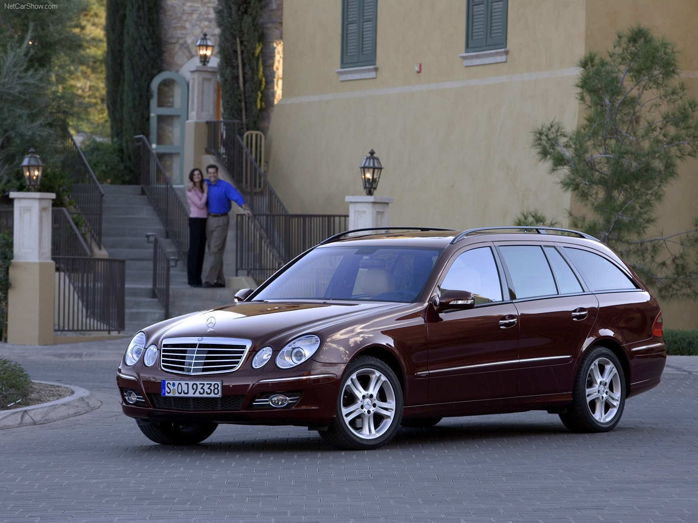

Imagem base

Escala de Cinza
Conversão de cada pixel para tons de cinza (média de R, G e B)
Preto e Branco
Binarização fixa
Imagem apenas preto e branco -- limiar 128.
Quantização
Reduz o número de níveis de cinza, agrupando valores em 'n' níveis.
Slider: Permite selecionar quantos níveis (2 - 16) -- Quanto maior, mais detalhes.
Limiarização
Binarização com escolha de ponto de corte
Slider: Permite escolher o limiar entre 0 a 255 -- Pixels acima viram branco, pixels abaixo viram preto.
Histograma
Gráfico de barras que mostra quantos pixels existem em cada nivel de cinza (0 a 255)
Passa alta
Destaca bordas e detalhes, realçando contornos sobre a imagem
Passa Baixa
Suaviza (borrão), atenuando ruídos e detalhes finos
Slider: Define a intensidade do blur (1 a 25) -- Quanto maior o valor, mais borrada a imagem.